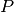
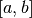
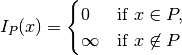
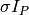
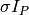
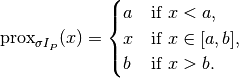
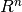

proximal_box_constraint¶
-
odl.solvers.nonsmooth.proximal_operators.proximal_box_constraint(space, lower=None, upper=None)[source]¶ Proximal operator factory for
G(x) = ind(a <= x <= b).If P is the set of elements with a <= x <= b, the indicator function of which is defined as:
ind(a <= x <= b) = {0 if x in P, infinity if x is not in P}
with x being an element in
space.- Parameters
- space
LinearSpace Domain of the functional G(x)
- lower
space.fieldelement orspaceelement-like, optional The lower bound. Default:
None, interpreted as -infinity- upper
space.fieldelement orspaceelement-like, optional The upper bound. Default:
None, interpreted as +infinity
- space
- Returns
- prox_factoryfunction
Factory for the proximal operator to be initialized
See also
proximal_nonnegativitySpecial case with
lower=0, upper=infty
Notes
If  is an interval , the indicator function is defined as

For a step size
 , the proximal operator of
 is given by the projection onto the interval
, the proximal operator of
 is given by the projection onto the interval
The proximal operator is independent of
and invariant under
a positive rescaling of  , since that leaves the indicator
function unchanged.
, since that leaves the indicator
function unchanged.For spaces of the form , the definition extends naturally in each component.